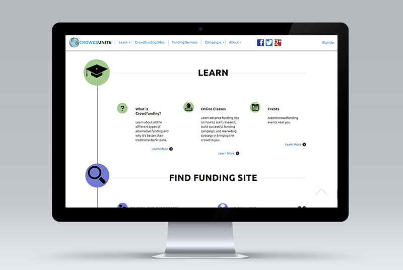

Experience
Orderhood
ReactJs • NodeJs • DynamoDB • RESTful API • FirebaseProvided on-demand delivery service which focused and committed to providing a cost-effective solution for local restaurants to optimize their deliveries. System dashboard enabled restaurants to contact with nearby professional carries for delivery service with calculated most effictive route.
Visit SiteTC Columbia University
T4 • PHP • JavaScript • MySQL • BootstrapTeachers College, Columbia University is the first and largest graduate school of education in the United States and is also perennially ranked among the nation’s best. Work included transferring over 60 academic programs', 300+ pages to new T4 CMS with responsive layout. Implemented customized design and features for departments with collaborating lead designer.
Visit Site
Thyhive
MeteorJs • MongoDB • Foundation • NodeJsVisual storytelling in elegant pages. Rethinking the approach to web design to be more print friendly. Allowing contents to be still interactive and involved in social web presence yet bridging the gap between digital and print.
Visit SiteCrowdsUnite
 WordPress • MySQL • CSS • JavaSript • PhotoShopCrowdsUnite is a crowd-sourced review site for online funding platforms. With the rich amount of educational resources and advisories from experts, users can compare hundred of crowdfunding sites to find the best option for their campaign.
Euro So. Cap USA
Html • CSS • JavaScript • ShopifyEuro So.Cap is the leader in hair extension and related products. Their products ships to worldwide and teach the most high end technique for hair extension application.